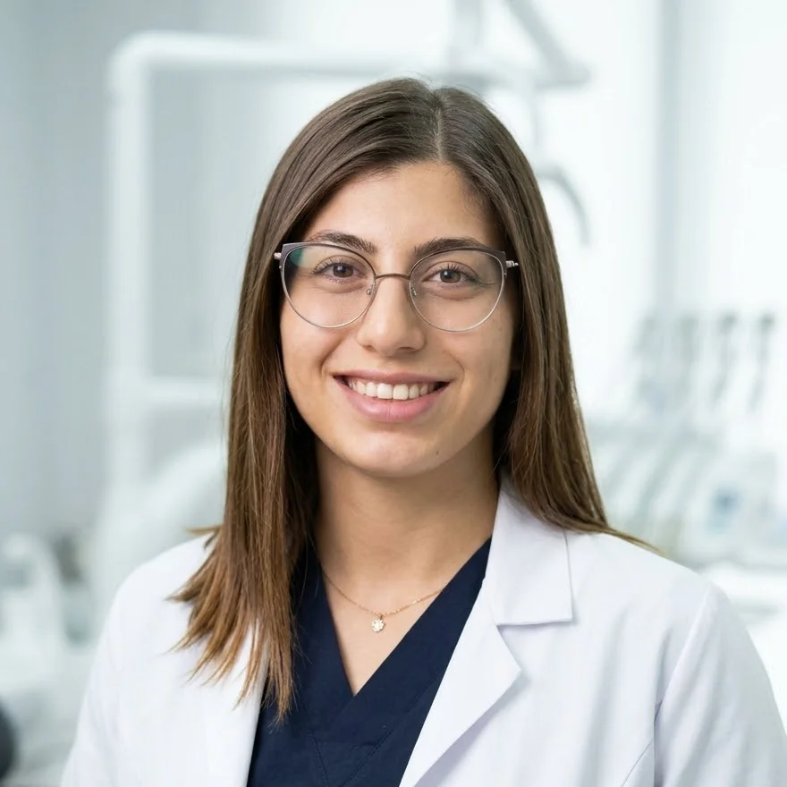

Education
2022 – 2027
Trakya University Faculty of Dentistry
Undergraduate Dentistry Programme (5 years) · Final year. Expected graduation: June 2027.

Dentistry calls for fine manual dexterity, a sound knowledge of anatomy and biomaterials, and a relationship of trust with the patient — all at once.
I chose this field because it lets me see the results of my work directly and turn scientific thinking into practice with every case. During the clinical phase of my five-year programme, I have worked chairside in every department of our faculty and learned that diagnosis and planning matter as much as the procedure itself.
Outside the clinic, I train regularly and enjoy bodybuilding. This discipline gives me a solid foundation for working ergonomically through long clinical sessions, staying focused and remaining consistent with my goals.
A good outcome rests on the right indication, a meticulous working routine and the patient's active involvement in their own care.
My academic programme, clinical rotations and language proficiency.
Undergraduate Dentistry Programme (5 years) · Final year. Expected graduation: June 2027.
Throughout my clinical training I have rotated through every department of our faculty, taking an active part in each stage of care — from history taking and clinical assessment to diagnosis, treatment planning and procedures. In my final year I am working in each of these clinics for a second time, consolidating my experience with increasing responsibility.
All clinical work is carried out for educational purposes under the supervision of our faculty members.
Certified by the ÖSYM TıpDil examination. I can follow the professional literature and international scientific publications in English.
For academic projects, congress and course invitations, or internship and volunteering opportunities, please get in touch by email or on LinkedIn.
This website is for personal and academic purposes only; it does not accept patients or provide health advice.